Your first wireframe in Figma Design
Introduction
This task will show you how to create a basic wireframe in Figma Design, building on what you created in Task 3. You will add another button, create frames, learn to link frames using the buttons, and test your clickable wireframe. Once you know how to make a small wireframe, you can make any wireframe with the same tools.
Warning
Before beginning this task, ensure you are in the file that contains your work from Task 3.
Procedure
Step 1: Click "File" near the top of the left sidebar.
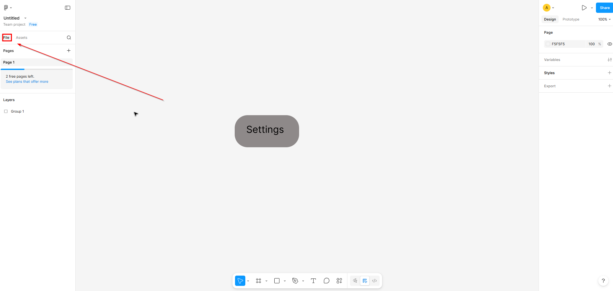
This ensures you can see all the layers in the file, and allows you to select specific shapes, without clicking them directly.
Success
You should be able to see the "Layers" section and within there should be "Group 1", "Settings", and "Rectangle 1".
Step 2: Click on your grouped shape and press Ctrl+C, then press Ctrl+V.
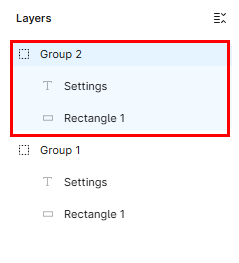
Copying your premade shape allows you to keep the size and color consistent.
Success
You should now see a "Group 2" in "Layers", the contains the same elements as "Group 1".
Step 3: Click and hold on your object, then drag it just left of the original object.
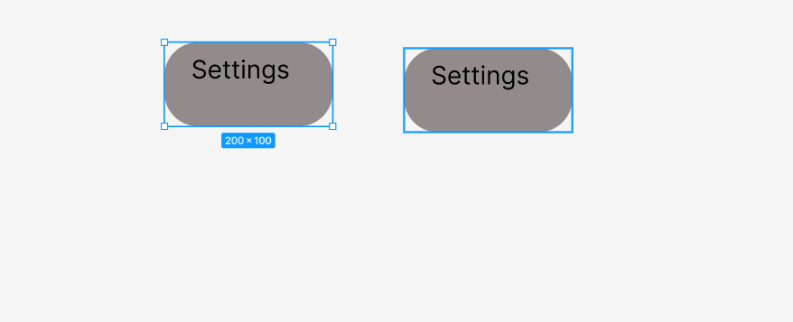
Separating the two objects and ensure you can easily interact with either of them.
Success
You should see two identical rounded rectangles, labeled "Settings", side by side.
Step 4: Click on "Settings" in "Layers" under "Group 2" in the left sidebar.
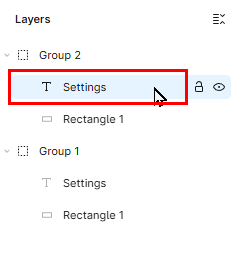
This will select the text box inside its group, and allow you to modify it.
Success
The text box in the left object should have a blue outline, and the text should be underlined.
Step 5: Double-click the underlined text in your left rectangle, type in Back, and click off.
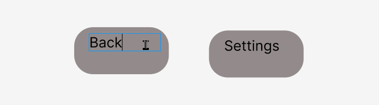
Changing the text of the second object gives them distinct names.
Success
You should now have a "Settings" shape, and a "Back" shape.
Step 6: Select the frame tool in the bottom toolbar by clicking on it.
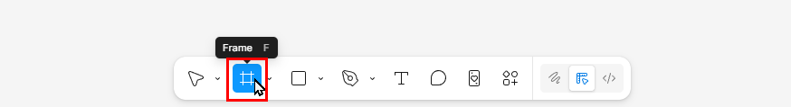
This tool will allow you to create frames that represent the base of a UI, like a phone or computer screen.
Success
The frame tool you clicked should now have a blue background, signifying that it's selected.
Step 7: Scroll down until the shapes are near the top of the screen.
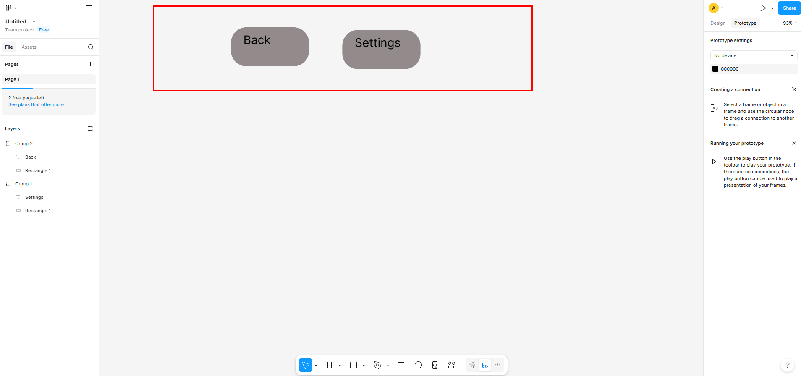
Creating extra space is useful for organization, and ensuring that things don't overlap.
Success
Your "Settings" and "Back" rectangles should be near the top of the screen.
Step 8: Draw a frame underneath the "Back" rectangle with dimensions approximately 300 x 500 just as you drew the rectangle in Step 3 of Task 3.
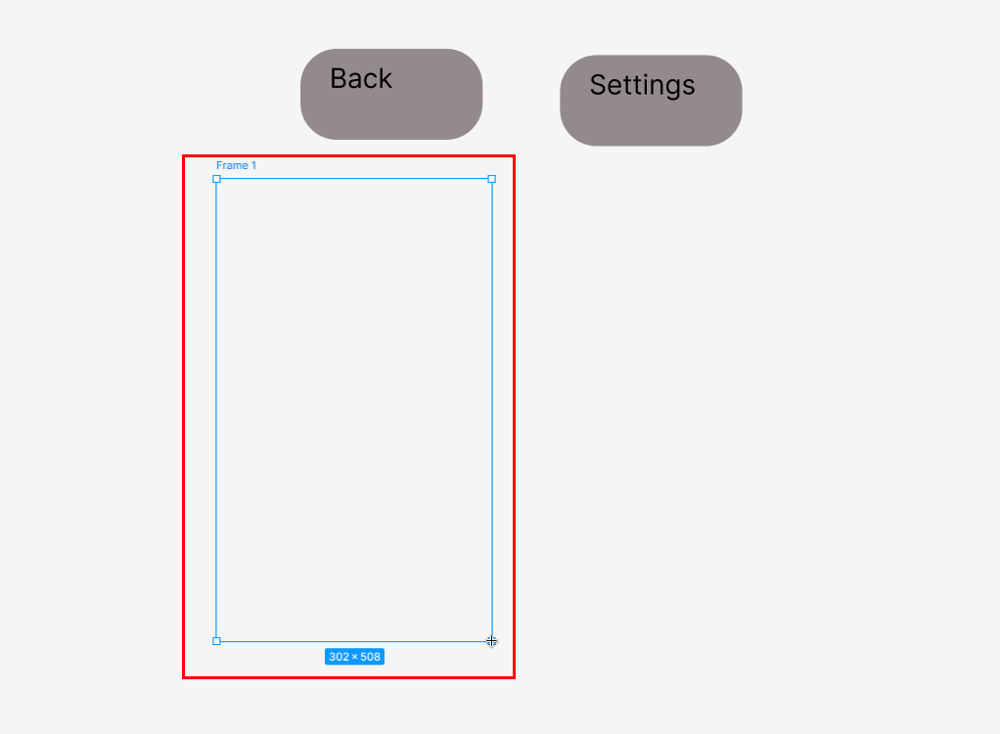
The frame is a crucial part of creating a clickable wireframe in Figma Design. You can attach clickable text, icons, or buttons to it.
Success
You should see a large, white vertical rectangle below your "Back" shape and a "Frame 1" layer in "Layers".
Step 9: Copy and paste the frame like you did with the "Settings" rectangle in Step 2.
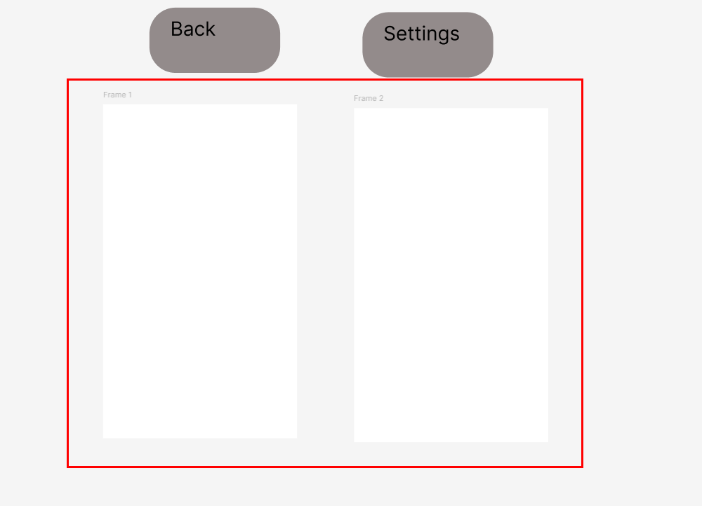
Creating a second frame will gives us two different screens to switch between.
Success
You should see two identical large, white rectangles.
Step 10: Drag your "Back" rectangle into the middle of "Frame 1".
Warning
In order for the shape to attach to the frame properly, the whole shape must be within the borders of the frame.
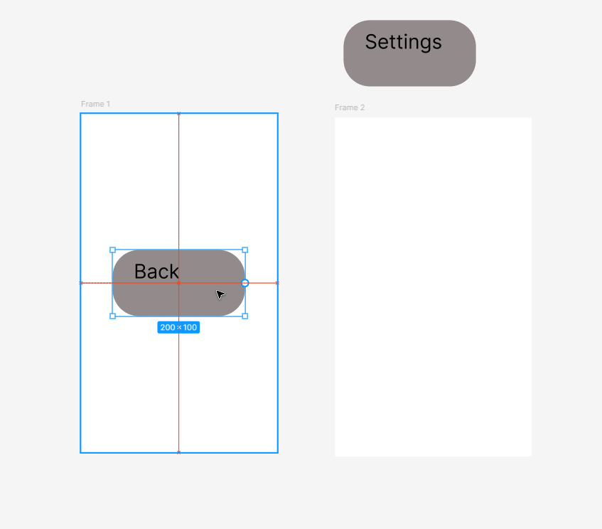
This will add the "Back" shape to the screen of the first frame.
Success
The "Back" shape should be visibly in front of "Frame 1".
Step 11: Drag your "Settings" shape into the middle of "Frame 2".
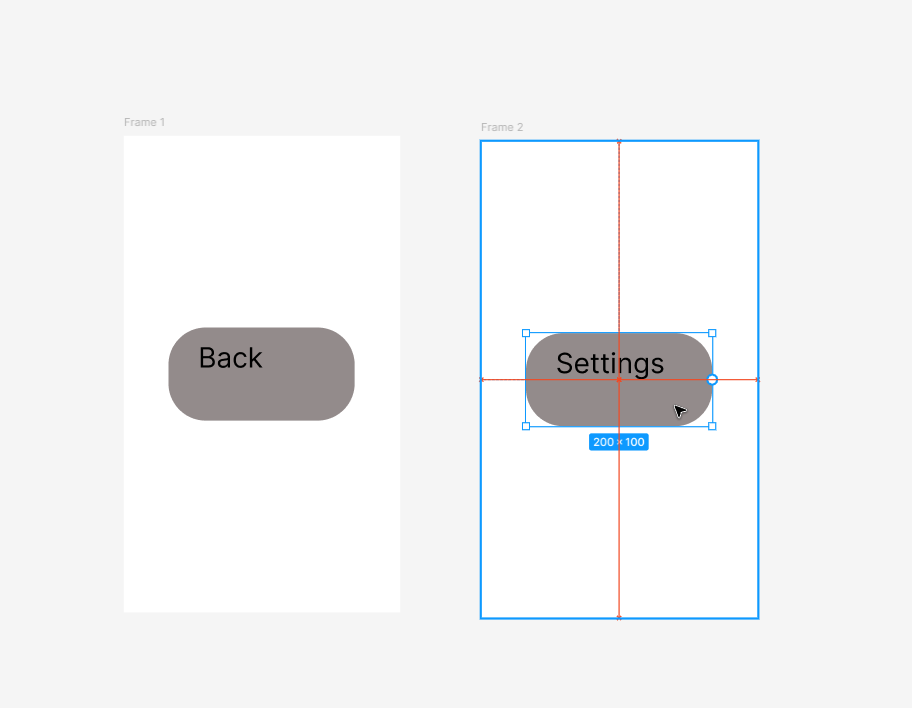
This will add the "Settings" shape to the static view of the second frame.
Success
The "Settings" shape should be visibly in front of "Frame 2".
Step 12: Click on "Prototype" at the top of the right sidebar.
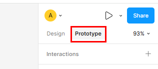
The "Prototype" section can be used to link frames and assign actions for the player to move from one screen to another.
Success
You should see "Creating a connection" and "Running your prototype" on the right sidebar
Step 13: Hover over the "Settings" shape and move your mouse to the middle of the left side of the blue outline of the shape.
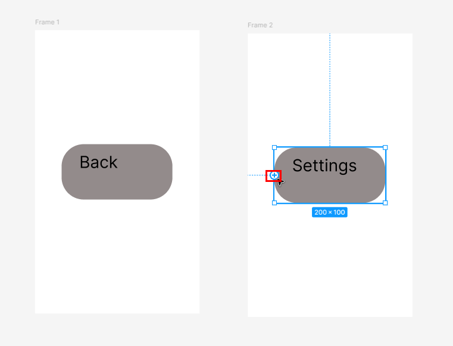
This will give you the ability to link the shapes together by dragging a link to another frame.
Success
Under your mouse cursor, you should see a small blue cross in a blue circle.
Step 14: Click on the cross, hold and drag the mouse to "Frame 1", let go when "Frame 1" has a blue outline and close the pop-up.
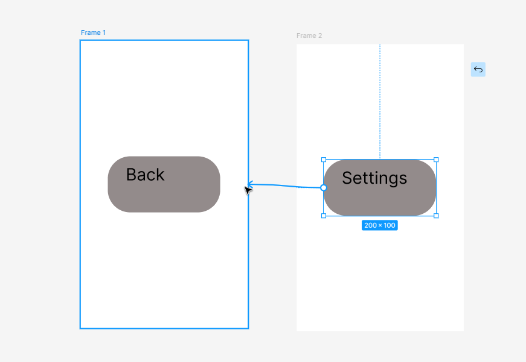
Linking the "Settings" shape to "Frame 1" means that later on, you can click "Settings" and the UI will show "Frame 1".
Success
There should now be a light blue line from "Settings" to "Frame 1".
Note
The pop-up that appeared can be used to customize the details of the interaction.
Step 15: Link "Back" to "Frame 2" in the same way as you did in Steps 13-14.
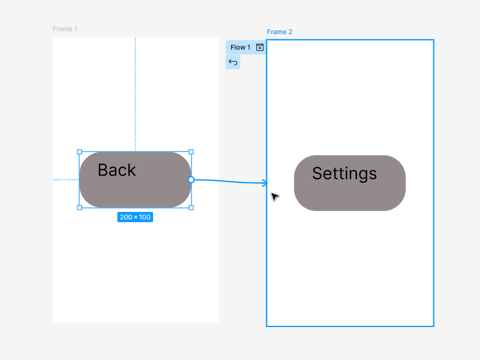
This links "Back" to "Frame 1" creating a connection loop between the two frames.
Success
There should now be a light blue line from "Back" to "Frame 2".
Note
The light blue connecting lines will only be seen while in the "Prototype" section of the right sidebar. If you switch back to "Design", they will be visually absent.
Step 16: Click on the Play Icon at the top of the right sidebar.
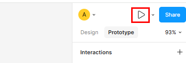
This will open a dynamic interaction prototype of your wireframe in another tab. By default it will show "Frame 1".
Success
You should be redirected to another tab in your browser and see one of your frames.
Step 17: Click the labeled "Back" button, then click the labeled "Settings" button.
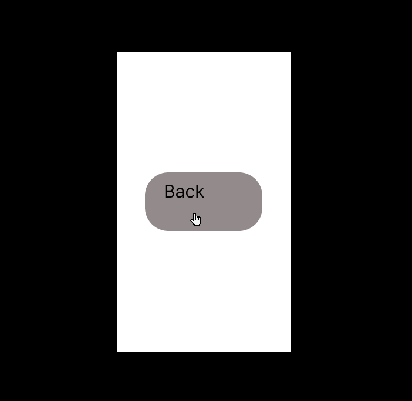
The prototype allows you to test your design, without having to code the UI, in order to confirm if your design is user friendly.
Success
Clicking on the buttons should switch your view to the other frame, in a loop.
Conclusion
In this task you built on the result of Task 3 to create a working wireframe and learned how to use shapes to create buttons, place them on frames, link them together, and test out your wireframe. Now, that you've got the basics down, using these same tools, you can create much more complex wireframes.
For help with display or formatting issues, see Troubleshooting.